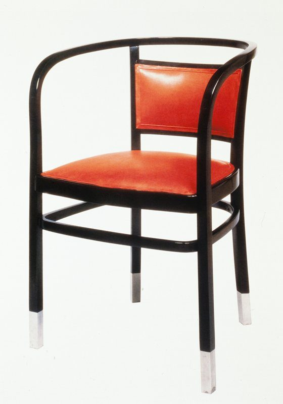

References / Furniture / 116
Armchair, model no. 718 F/B
Otto Wagner’s bentwood armchair of about 1902: ebonized beech, a square upholstered seat and back panel, and aluminium sabots on the feet.
- Source
- Minneapolis Institute of Art: Armchair, model no. 718 F/B, 98.276.302
- Creator
- Otto Wagner (designer); Jacob & Josef Kohn (manufacturer)
- Made
- c. 1902
- Style
- Vienna Secession (agent-proposed, not yet reviewed by a person)
- Moods
- Austere, precise, rational
- Evidence
- Downloaded and inspected the Minneapolis Institute of Art photograph of object 98.276.302 (560 × 800 px). The leather colour in the photograph may not be original; the museum record does not say.
- Reviewed
- Rights
- Open license, stored. License: public domain. Rights policy
Context
Mia records the chair as designed by Otto Wagner and made by Jacob & Josef Kohn, c. 1902, in ebonized beechwood with aluminium sabots and leather. Mia 98.276.302.
Mia’s label says the chair precedes a variant armchair of 1904–1906 designed for the Postal Savings Bank in Vienna, that Kohn and the rival firm Gebrüder Thonet produced the form in several variations, and that Wagner was the first of his colleagues to use aluminium in interior elements and furniture. Mia 98.276.302. See the Postal Savings Bank.
Observed
- The frame is black: a continuous bentwood rail forms the back and both arms and comes down as the front legs.
- The seat and the back panel are square-cut and upholstered in smooth red leather; the back panel is framed by the black rail and two uprights.
- A ring of bentwood joins the four legs below the seat.
- Each leg ends in a bright metal sleeve (sabot), which stands out against the black wood.
Why it belongs
Metal caps at the points of wear are functional, but Wagner shows them as a deliberate accent, like the aluminium bolts on his bank façade. Black with bright metal is the palette of his bank interiors.
The curved bentwood rail links this chair to the Thonet tradition more than to the square lattice of Hoffmann and Moser, so it is a partial fit.
Borrow
Use black as the main colour, with one bright metallic accent at edges and endpoints.
Frame one square panel with a thin black line, and keep the panel plain.
Measured
Machine-extracted by tools/image-traits.py on . Full measurement.
- Mean chroma
- 0.07
- Palette
- #f5f7f4 70%
- #1a1615 5%
- #292220 4%
- #3c302b 4%
- #c52c21 3%
- #de553b 3%
- #58413a 2%
- #e87a50 2%

